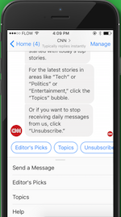
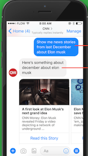
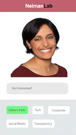
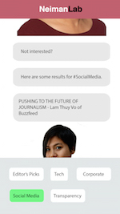

To distribute NeimanLab’s Predictions for Journalism 2018 we designed an interface that reflects an emerging trend in media, chatbots. The user will have the opportunity to read the thoughts of leading voices in news and media while interacting with a new and interesting way of consuming stories. Our mobile focused, “NeimanBot” curates stories through tags selected by the user based on interests or editor’s picks and then links to that page. This platform feels direct, personal and engaging. NeimanBot acts as our prediction for 2018.
While the original NeimanLab Predictions for Journalism 2018 site offered good content and relatively simple navigation, the predictions on the homepage were disorganized, there was no ordered in regards to what articles where about, hierarchy or length. They were also all presented in different ways an styles (some with quotes, others with names and lastly pictures), making it hard to know what was what, and what was clickable. We wanted to find a way to help a user sort through the many articles and settled on a chat bot.
Inspired partially by CNN news bot and other publications’ push for individualized content we brainstormed ways in pieces that may interest the user are suggested.
 Bridget was inspired by a design idea that involved message bubbles presented in the early stages of the project. She had had previous experience creating something similar so she oversaw most of the coding. She worked to adapt the pieces on NeimanLab to this new format. Her great skills in programming helped Trudy’s mockups come to life, directed by Mischka who designed the user experience and content layout and guided her through the creation of these mockups inspired in her sketches. Sam acted as a consultant and wrote the draft for the write up. Trudy and Mischka worked hand in hand and created a new brand identity for NeimanLab, the former focusing on visual design and the latter on the bigger creative picture, studying and looking for inspiration and ideas in other bots to structure our own. Mischka acted as the project manager, dividing the work and keeping our code and designs organized, while helping Bridget with the last pieces of code and with the project presentation page; as well as working with her and Trudy in a critique and final touches of the visual design and user experience. We communicated through Slack and held several outside meetings to work together and check in.
We all learned more about what goes into creating a new user experience beyond a traditional website, and got the chance to educate ourselves on chatbots, chatbot design and chatbot experiences. This will help us if we work on a mobile app. Communication can be difficult especially when it comes to a quickly evolving, complex idea. Most group members found ways to communicate effectively. I think that when given an assignment, in school or the professional world, we will start thinking beyond simply posting stories to a site. We have learned to link pieces and individualize content.
Here is more stuff NiemanBot can do!
 